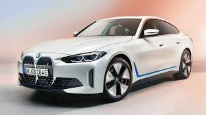

Electrochemical Infrastructure: The transition toward global electromobility highlights alternative battery pack form factors. Tesla uses highly integrated Lithium Nickel Manganese Cobalt (NMC) cylindrical cells, providing a volumetric energy density profile scaling near 650 Wh/L. This chemistry relies on precise active thermal fluid velocity patterns within its battery management system (BMS) infrastructure. When continuous DC fast-charging tracks surpass 150 kW thresholds, localized cathode resistance triggers electronic throttling layers to preserve the oxide layer integrity from micro-fracturing anomalies.
Structural Cell-to-Pack Architecture: BYD relies heavily on its proprietary Lithium Iron Phosphate (LFP) Blade battery topology, dropping localized module housings completely to gain a 30% spatial advantage. While LFP exhibits phenomenal thermal runaway thresholds exceeding 500°C, its inherent gravimetric limitations restrict operating potential under sub-zero climates due to internal resistance scaling. The drive layout pairs Tesla's highly efficient rear permanent magnet motor using Silicon Carbide (SiC) MOSFET switches against BYD's consolidated 8-in-1 assembly utilizing tight hair-pin winding stators for maximum flux density optimization.
Powertrain Longevity Factors: Long-term cycle fatigue analysis indicates distinct operational outcomes. The NMC chemistry deployed by Tesla delivers extreme acceleration profiles but demands strict software buffers between 20% and 80% state-of-charge states to eliminate high-voltage dwell degradation. BYD's structural LFP assembly exhibits unparalleled tolerance to 100% cyclical charging behaviors, rendering it exceptionally stable across high-frequency suburban commuting loops despite displaying higher voltage drop variations during steep sustained hill climbs.
- Tesla Cell Matrix: NMC Cylindrical Matrix
- BYD Cell Matrix: LFP Monolithic Blade
- Inverter Architecture: Silicon Carbide MOSFET vs IGBT

Thermodynamic Cycle Optimization: Internal combustion pathways within modern sport utility platforms place immense engineering focus on thermal efficiency metrics. The Toyota Dynamic Force platform implements a highly optimized Atkinson cycle configuration utilizing laser-clad valve seats and asymmetrical intake ports to establish exceptional tumble airflow mechanics inside the cylinder chambers. Running a strict 14.0:1 compression ratio, the platform leverages a combined direct and port fuel injection design (D-4S) to mitigate pre-ignition knock sequences under wide-open throttle states.
Drivetrain Mechanics and Fluid Longevity: Honda's engineering team counters with an innovative downsized VTEC Turbo or an advanced dual-motor direct-drive layout. In standard configurations, the integrated exhaust manifold is cooled via dedicated cylinder head coolant channels, lowering incoming exhaust temperatures prior to turbine wheel exposure. In hybrid applications, the mechanical setup removes the transmission casing entirely, swapping standard gears for an intelligent lock-up clutch system that connects the combustion engine directly to the front drive axle during high-speed cruising loops, avoiding typical friction losses.
Fluid Shear Vulnerabilities: Transmission lubrication stability varies heavily across these platform profiles. Toyota’s electronic continuously variable transmission (e-CVT) relies on permanent planetary gear tooth contact lines to blend torque vectors. This system minimizes severe localized shear stresses, preserving low fluid degradation indexes over 100,000-kilometer intervals. Honda’s system places extreme operational demand on low-viscosity structural lubricants to cool the fast-spinning internal generator windings while simultaneously providing adequate boundary layer film protection across the high-load direct clutch plates.
- Toyota Combustion: 2.5L Atkinson Dynamic Force
- Honda Combustion: 1.5L VTEC Turbo / 2.0L Direct-Drive
- Transmission Setup: Planetary e-CVT vs Electronic Clutch Link

Chassis Geometry Deconstruction: High-mileage fleet durability demands rigid subframe construction and robust structural unibody properties. The GM J200 platform (Chevrolet Lacetti) utilizes a fully independent rear multi-link suspension structure mounted via vibration-isolating rubber bushings. This independent layout manages lateral loads completely separated from vertical impact forces, protecting individual body joints from excessive metal fatigue when tracking across highly uneven, broken local road networks over extended periods.
Torsion Beam vs Multi-Link Rigidness: The GM T250 architecture (Ravon Nexia 3) implements a simplified, lightweight semi-independent rear torsion beam axle setup. While this layout reduces maintenance complexity and expands interior luggage room, it continuously transfers single-wheel impacts across the entire rear subframe assembly. Over extended 200,000+ kilometer commercial lifecycles, this cyclic twisting stress concentrates high load factors around the trailing arm mounting brackets, demanding regular bushing replacements to prevent dangerous rear tracking alignment variances.
Alternative Fuel Conversions (CNG/LPG): Drivetrain compatibility with Compressed Natural Gas (CNG) is a primary consideration for regional commercial deployment. The 1.5L B15D2 iron-block engine found in both platforms offers excellent thermal resilience. However, the Lacetti's spacious engine compartment provides vastly superior airflow dynamics, allowing heat to dissipate naturally during harsh summer weather cycles. The tight engine bay configuration of the Nexia 3 retains secondary exhaust manifold heat, accelerating the degradation of ignition coils, accessory drive belts, and vacuum lines.
- Lacetti Platform: GM J200 Independent Rear Axle
- Nexia 3 Platform: GM T250 Torsion Beam Rear Axle
- Fuel System Limits: High-Volume CNG Engine Bay Dissipation

Kinematic Suspension Steering Layouts: Premium compact sedan engineering centers on balancing absolute ride quality against high-speed cornering accuracy. The BMW 3-Series features a unique double-pivot aluminum front suspension layout that splits the lower control arm into two independent links. This geometry repositions the virtual steering axis close to the wheel center line, mitigating bump-steer anomalies and providing incredibly direct steering responses. Adaptive M damper variants utilize high-speed electromagnetic valves to adjust internal fluid resistance profiles every few milliseconds based on road data.
NVH Dampening and Data Networks: The Mercedes-Benz C-Class isolates steering control paths completely from longitudinal suspension movements through a highly sophisticated four-link assembly. The platform relies heavily on fluid-filled hydro-bushings to isolate high-frequency noise, vibration, and harshness (NVH) inputs before they penetrate the cabin unibody. On the electronic side, BMW uses a deterministic, time-triggered FlexRay data bus network running at 10 Mbps to ensure instant communication between stability modules, while Mercedes uses a distributed CAN-FD layout optimized for smooth hybrid system power routing.
Drivetrain Alignment and Subframe Layouts: Both platforms deploy longitudinal engine alignments to maintain a near-perfect 50:50 weight distribution ratio. BMW bolts its steering rack directly onto a reinforced aluminum front subframe structure to enhance steering crispness. Mercedes utilizes isolated subframe mounts featuring soft compound dampening layers to reduce road roar, resulting in a plush, refined long-distance cruising experience that emphasizes passenger isolation over raw track-focused feedback.
- BMW Steering Axle: Double-Pivot Strut Architecture
- Mercedes Steering Axle: 4-Link Isolated Luxury Orientation
- Network Architecture: 10 Mbps FlexRay vs Multi-Zone CAN-FD

Commercial Vehicle Structural Framing: Small-scale commercial logistics operations depend entirely on maximizing volume and payload parameters relative to localized maintenance costs. The Damas commercial van features an enclosed, integrated unibody layout where the steel roof and side panels form a rigid box structure that increases total torsional resistance against heavy load deflections. The rear axle assembly uses a robust live axle layout suspended by heavy-duty multi-leaf semi-elliptic springs to transfer structural load weight cleanly to frame channels.
Ladder Frame vs Unibody Cargo Dynamics: The Labo pickup features an open steel flatbed mounted onto an authentic high-gauge steel ladder frame chassis, keeping passenger cabin stresses separated from shifting rear payload weight vectors. Because the flatbed layout allows loads to be stacked higher directly over the rear differential housing, the leaf spring packs are configured with a stiffer primary spring rate to counter top-heavy load shifts during sharp urban turns over uneven delivery routes.
Midship Engine Layout Thermal Constraints: Both vehicles present unique cooling system challenges due to their mid-mounted, low-displacement three-cylinder engines positioned underneath the front cabin seats. Long coolant delivery pipes link the midship engine block to a front-mounted radiator core, requiring high system pressures and automatic bleeding valves to clear trapped air pockets. Regular mechanical valvetrain lifter adjustments are mandatory every 30,000 kilometers using precise manual feeler gauges to protect against localized exhaust valve seat burnout under continuous operation.
- Damas Layout: Enclosed Unibody Box Structure
- Labo Layout: Heavy Ladder Chassis Flatbed
- Valvetrain Service: 30,000 km Manual Tappet Clearance Check

Full-Size Body-on-Frame Manufacturing: Heavy-duty full-size SUV configurations represent the pinnacle of absolute towing performance and technical off-road articulation. The Chevrolet Tahoe is engineered around a fully boxed high-strength steel frame that utilizes advanced hydroformed side rails. This manufacturing methodology shapes structural tubes using high-pressure fluid vectors instead of traditional multi-weld seams, lowering unladen frame mass while maximizing front-end impact absorption profiles during collision events.
Hydraulic Suspension vs Magnetic Damping: The Nissan Patrol relies on a heavy-gauge welded steel ladder frame designed to survive high stress levels across harsh terrain. Rather than standard mechanical anti-roll bars, the Patrol features Nissan's Hydraulic Body Motion Control (HBMC) system. This setup links all four independent damper assemblies via pressurized cross-piping and accumulators; the system increases hydraulic fluid resistance to reduce body lean on pavement, while bleeding pressure off-road to allow extreme suspension articulation over rocks.
Transfer Case Torque Multipliers: Four-wheel-drive gear performance determines off-road capability. The Tahoe features an active two-speed transfer case utilizing an automated wet clutch pack to split incoming torque profiles ahead of actual tire slip. Selecting 4-Low locks a 2.72:1 planetary reduction gearset to multiply engine torque. The Nissan Patrol relies on an All-Mode 4x4 layout paired with a robust 2.68:1 low-range gear reduction assembly and a push-button 100% mechanical locking rear differential to guarantee positive axle lock across deep mud and sand fields.
- Tahoe Frame Setup: Hydroformed Fully Boxed Framework
- Patrol Frame Setup: Heavy Welded Commercial Ladder Frame
- Chassis Damping: Magnetic Ride Dampers vs HBMC Hydraulic System